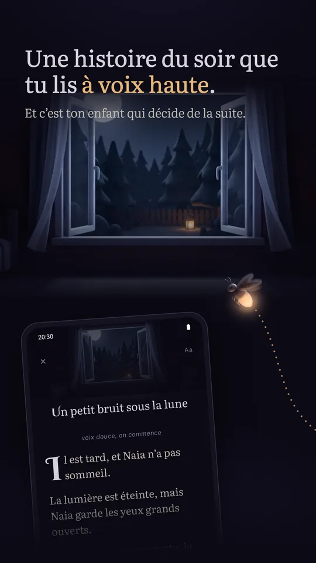
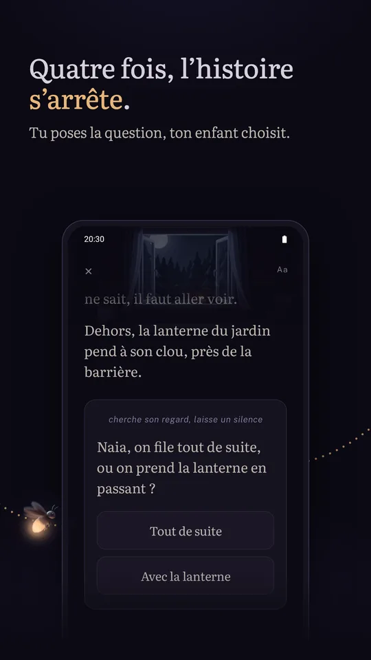
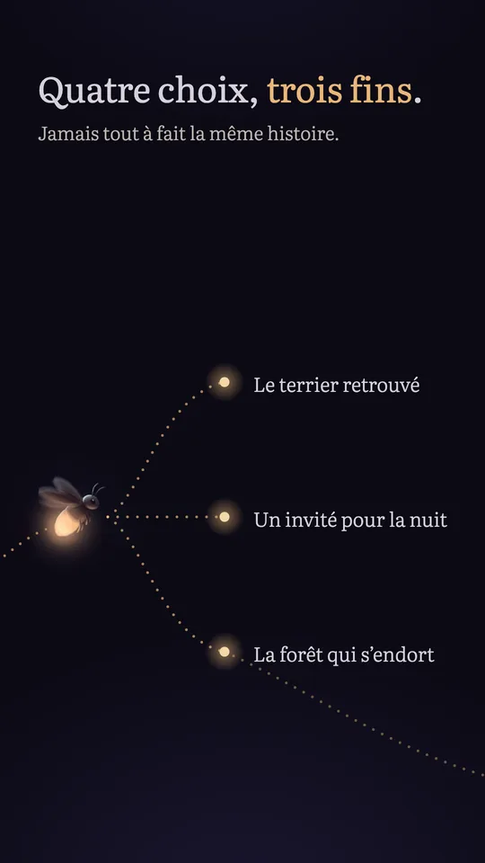
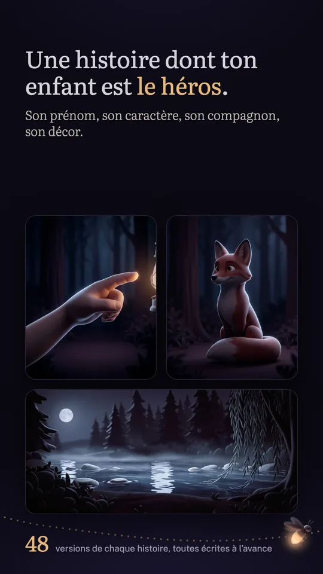
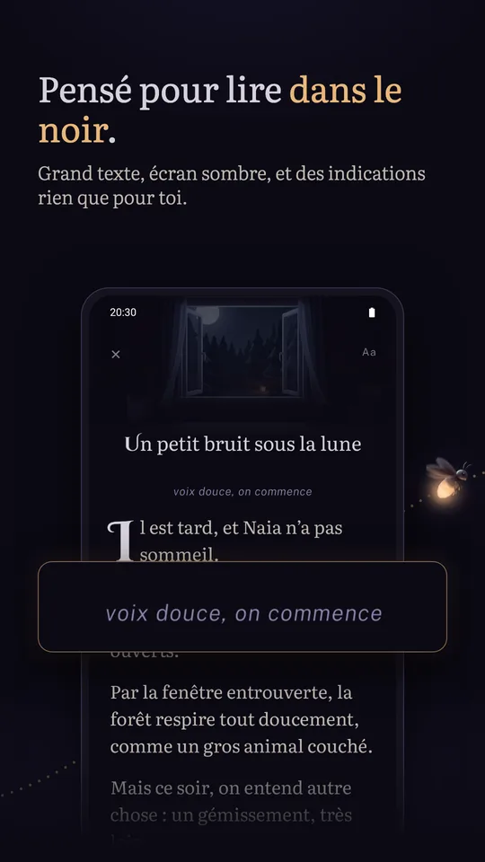
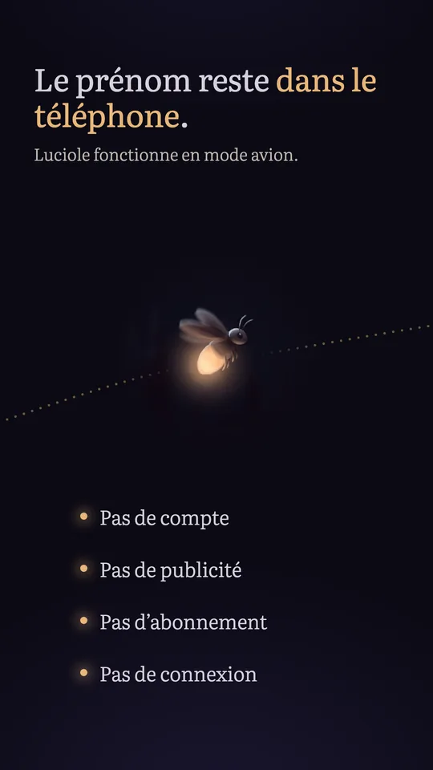
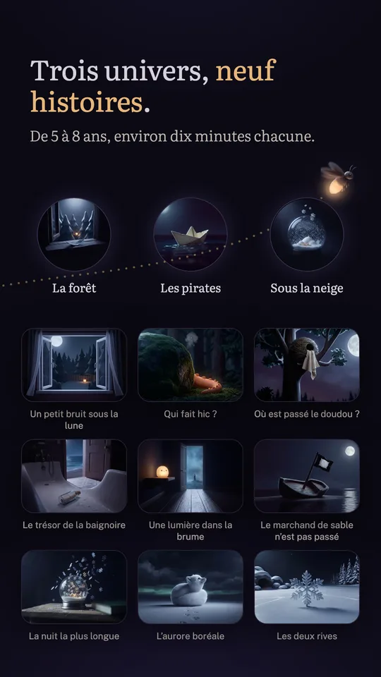

Luciole
Ce soir, ton enfant décide comment l’histoire finit.
Une histoire lue à voix haute, décidée par l’enfant
-
Vous lisez, il décide
Vous tenez le téléphone et vous lisez. Quatre fois, le récit s’arrête sur une question que vous posez à votre enfant. Il répond, vous touchez son choix, l’histoire bifurque.
-
Trois fins
Les choix changent vraiment la suite. Ce n’est jamais tout à fait la même histoire d’un soir à l’autre.
-
Son prénom, son héros, son compagnon, son décor
Courageux, curieux, malicieux ou tranquille ; un compagnon parmi quatre, du renard au perroquet ou au manchot ; un lieu parmi trois, de la rivière à l’épave ou à la banquise. Quarante-huit versions de chaque histoire, écrites, pas assemblées par une machine.
-
Pensée pour le noir
Écran sombre, texte crème, grande police réglable en un geste. L’histoire se lit d’un seul défilement, sans page à tourner, et chaque question arrive dans une carte au moment de la poser. Les indications qui vous sont destinées sont en italique et ne se lisent pas à voix haute.
-
Trois univers, neuf histoires
La forêt, offerte, avec ses trois histoires ; les pirates et la neige, trois histoires chacun, à débloquer une fois pour toutes par Google Play. Pour les cinq à huit ans, de huit à dix minutes de lecture chacune.
Comment ça marche
Le prénom de votre enfant, puis trois images à choisir : comment il est ce soir, qui l’accompagne, où ça se passe.
Vous lisez à voix haute, d’un seul défilement, sans page à tourner.
À chaque question, votre enfant décide. Vous touchez son choix, et vous continuez.
En images







Sans compte ni publicité
Luciole ne collecte, ne transmet et ne partage aucune donnée personnelle. Pas de compte, pas de connexion, pas de publicité, pas d’abonnement : les univers s’achètent une fois, par Google Play, et l’application fonctionne en mode avion.
Sur le téléphone, elle garde le prénom de votre enfant et l’accord choisi, les choix faits avant chaque lecture, la taille de texte, et l’historique des histoires lues. Désinstaller l’application efface tout ça.
Questions
Mon enfant peut-il l’utiliser seul ?
Ce n’est pas fait pour. Luciole est un rituel à deux : le parent tient le téléphone et lit, l’enfant écoute et décide. Il n’y a rien à lire pour lui, et rien qui bouge à l’écran.
Pour quel âge ?
De cinq à huit ans. Le vocabulaire est calibré pour un enfant de six ans qui écoute, sans supposer qu’il sache lire.
Combien d’histoires ?
Neuf, dans trois univers. La forêt est offerte : « Un petit bruit sous la lune », « Qui fait hic ? » et « Où est passé le doudou ? ». Les pirates et la neige se débloquent chacun par un achat unique, sans abonnement. Chaque histoire existe en quarante-huit versions selon le héros, le compagnon et le décor choisis, avec trois fins, en français ou en anglais. Rien ne se télécharge, tout est dans le téléphone.
Faut-il une connexion ?
Pour lire, jamais : l’application fonctionne en mode avion. Seul l’achat d’un univers passe par Google Play, qui demande alors une connexion.
Peut-on reprendre une histoire interrompue ?
Oui. Si l’enfant s’endort au milieu, l’accueil propose de reprendre là où la lecture s’est arrêtée.